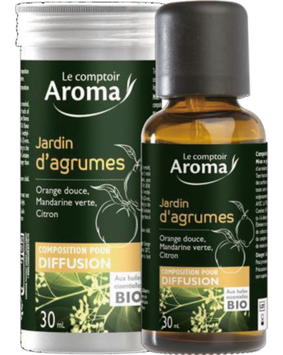

彤美人 2026 PIF 與醫美新制
AI 應對方案
把店內產品、供應商文件、對外文案與美容/醫美服務邊界，整理成可查詢、可追蹤、可改善的 AI 合規管理系統。

2026/7/1 不是單一事件，是美容業資料治理的分水嶺
一般化粧品 PIF 全面上路
前兩階段已涵蓋特定用途、嬰兒、眼唇、牙膏漱口水；2026/7/1 進入大部分一般化粧品。
屆期不改正罰鍰上限
《化粧品衛生安全管理法》第 24 條含 1 萬至 100 萬罰鍰、按次處罰與重大停業風險。
合規管理變成成交信任
產品來源、文件狀態與安全話術整理好，反而能變成專業品牌的信任證據。
重點不是把法規背起來，而是讓彤美人知道每一項產品、每一個供應商、每一句文案目前是否安全。
兩套新制常被混在一起，彤美人要分開管
化粧品產品資訊檔案
美容醫學手術與特定處置
彤美人的風險不是「會不會被罰」而是「資料是否說得清楚」
最需要先盤點的項目

AI 系統先幫彤美人建立「三本帳」
每項產品都能查
品名、品牌、供應商、用途、來源、是否進口/分裝/貼牌、販售或店內使用狀態。
每份文件都能追
產品登錄、成分標示、批號、檢驗、PIF 狀態、供應商聲明、窗口與更新日期。
每句文案都能修
LINE 回覆、社群貼文、DM、療程介紹、直播銷售稿與禁用醫療效能宣稱。
我們的 AI 系統能提供 6 個核心服務
PIF 風險分級
低/中/高風險分類，優先處理自有品牌、分裝、來源不明與功效宣稱強的產品。
供應商文件追蹤
自動列待補文件、追蹤回覆狀態、提醒資料過期或 7/1 後不建議販售。
產品合規資料庫
店員可直接查詢產品來源、文件狀態、建議說法與不可承諾事項。
廣告文案檢查
檢查療效宣稱、醫療效能、誇大不實、前後對比過度暗示與高風險字詞。
美容/醫美紅線檢查
把服務項目分為可做、需注意、需醫療合作、不應自行執行。
員工與客服訓練
把安全話術、轉人工規則、客人疑問與標準回答做成內部 AI 助理。
先用風險矩陣決定優先順序
| 項目 | 低風險 | 中風險 | 高風險 |
|---|---|---|---|
| 產品來源 | 品牌清楚、供應商穩定 | 文件不完整 | 來源不明、進口、貼牌、分裝 |
| 文件狀態 | 登錄/標示/聲明完整 | 缺少部分佐證 | 無法說明 PIF 或檢驗狀態 |
| 對外文案 | 保養與舒緩描述 | 功效說法偏強 | 治療、改善疾病、醫療效果 |
| 服務項目 | 一般美容護理 | 儀器/檢測需加聲明 | 雷射、電音波、針劑、麻醉相關 |
AI 不取代專業法規判斷，但可以把「該先查哪裡、該補什麼、該避開什麼」每天固定提醒。
合規不是只有防罰，也能變成銷售優勢

可以對客人說得更專業
7/1 前的 6 週導入路線
產品盤點
建立所有販售、使用、贈送、體驗品清單。
文件追蹤
向供應商索取登錄、標示、PIF 狀態與聲明。
風險處置
高風險產品先停售、下架、替換或補件。
話術修正
官網、LINE、IG、DM、療程名稱全面檢查。
AI 上線
產品查詢、文件提醒、文案檢查與客服訓練。
可包裝成三層服務方案
先把風險看清楚
產品清冊、供應商文件清單、風險分級、7/1 前待辦表。
讓店員每天用得上
AI 知識庫、產品查詢、文案檢查、客服安全話術、員工訓練問答。
讓合規持續更新
每月更新產品資料、檢查新文案、追供應商文件、產出風險報告。
要講清楚：AI 是管理系統，不是 PIF 簽署人
AI 可以做
AI 不能取代
對外提案時，這個邊界一定要寫清楚，反而會增加客戶信任。
Jason 對彤美人的開場話術
「7 月 1 號不是只有工廠或品牌商要緊張，美容店也要知道自己店裡每一項產品從哪裡來、供應商能不能補資料、對外話術有沒有踩到醫療或誇大宣稱。你們不用自己變法規專家，我們幫你把產品、文件、文案和服務邊界整理成 AI 可以查的系統。這樣店員能安心回答，老闆能追蹤風險，客人也會覺得你們更專業。」
建議下一步：先做 10 項產品小型試點
彤美人需要提供
我們交付
底部控制列怎麼用？
每份簡報底部都有五個固定按鍵。按鍵會顯示「符號 + 中文小字」，手機與桌面都可以直接點選。
上一頁
回到前一張投影片。
下一頁
前往下一張投影片。
總覽
打開全部投影片目錄。
重點
顯示本頁重點摘要。
沉浸
切換沉浸/專注模式。